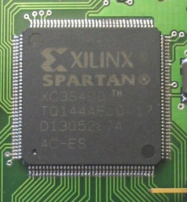
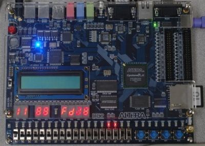
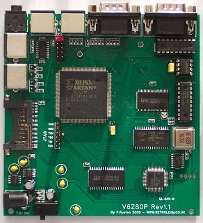

A weblog focused on interesting circuits, ideas, schematics and other information about microelectronics and microcontrollers.
E-books
Disclaimer
Because I have not tested all electronic circuits mentioned on this pages, I cannot attest to their accuracy; therefore, I do not provide a warranty of any kind and cannot be held responsible in any manner.
FPGA
Z80 System on a Chip
18. September 2010 - 14:07 — adminSimple goal: To make a Z80 computer, with an interpreter, video out, keyboard, and some kind of external mass storage.
Do you want to have your very own MCU?
17. November 2009 - 18:33 — adminMy dream, past in the 80's, was to design and make my own microprocessor. This isn't such impossible as it sounds nowadays, thanks to modern FPGAs.

FPGA Interfacing of LCD module
21. October 2009 - 21:01 — adminThis project is about interfacing a typical HD44780 Text LCD to an FPGA using delay elements with a Finite State Machine (FSM).

USB Logic Analyzer
13. September 2009 - 14:54 — adminLogic analyzer based on Altera FPGA with USB interface.

FPGA: The first contact
7. August 2009 - 21:15 — adminIs there a cheap and powerful kit for an experiments with FPGAs? Yes, here it is!

Apple II+ in FPGA
18. June 2009 - 17:44 — adminReconstructing the classical 80's computer with modern FPGA chip from Altera - Apple2fpga

Commodore VIC-20 in a FPGA
2. May 2009 - 5:51 — adminThe complete original Commodore VIC-20 hardware, including the CPU, in a single FPGA.
V6Z80P - the "ZX Spectrum version 2009"
8. April 2009 - 19:52 — adminRetroleum's terrific Z80-based single board computer. Simply amazing!

ZXGate - old computers in new FPGAs
10. January 2009 - 12:08 — adminFour vintage computers in one FPGA: ZX81, ZX Spectrum, Jupiter ACE and TRS80 implemented in the VHDL.